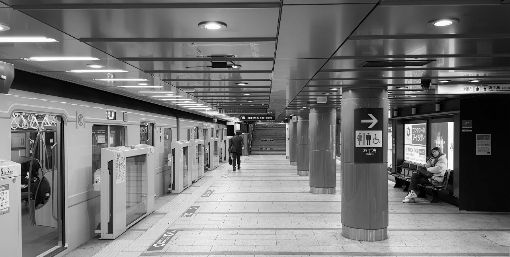
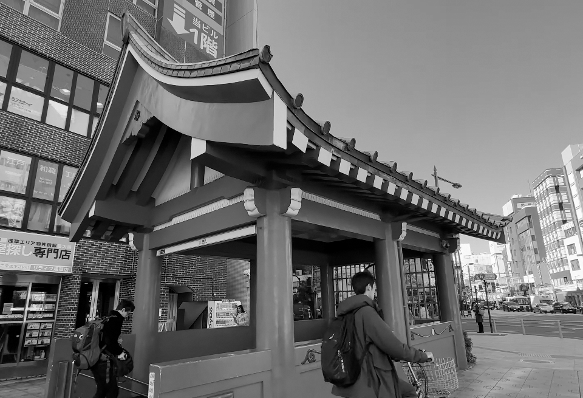
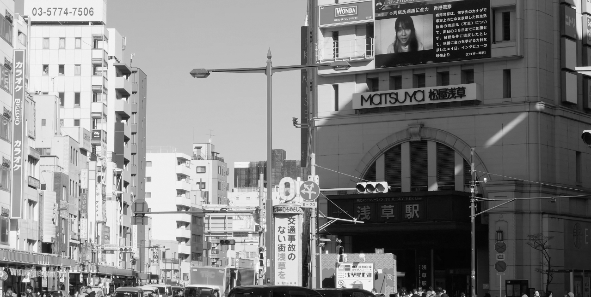
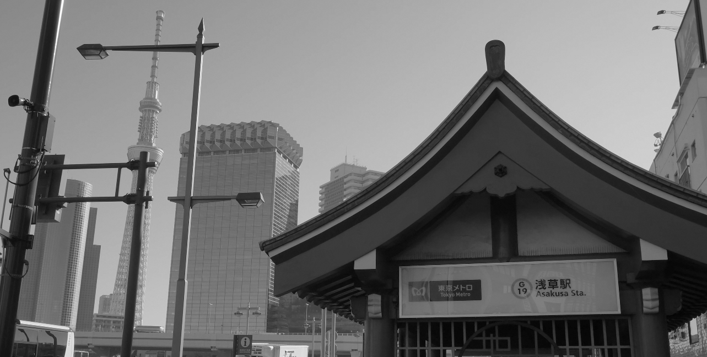
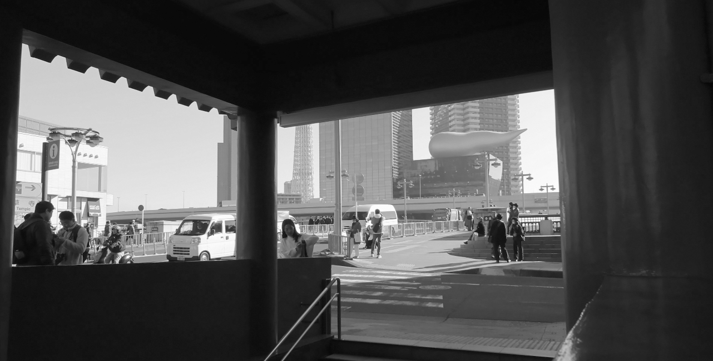
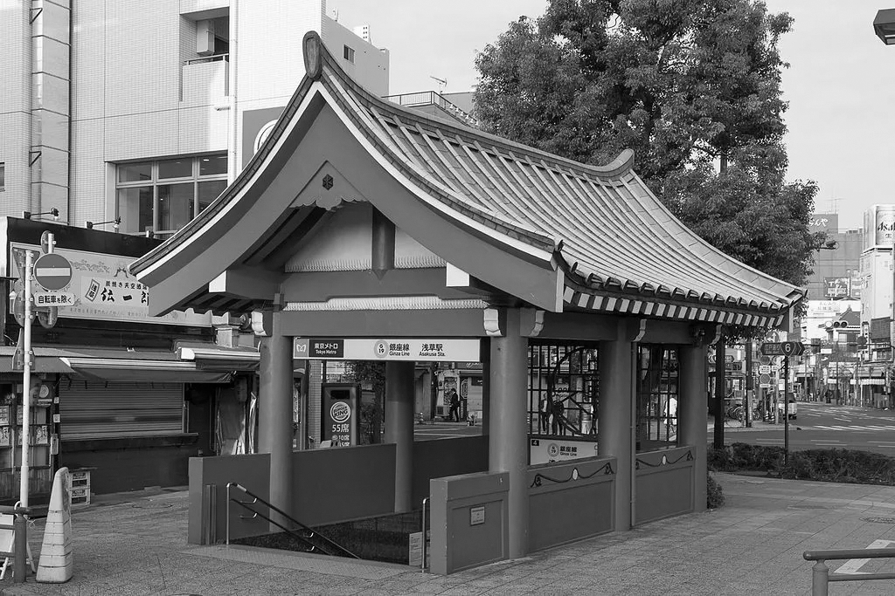

01
아사쿠사의 근본 출입구
Asakusa Station Exit 4
도쿄 메트로 아사쿠사역 4번 출구
지하철 긴자선 아사쿠사역 승강장에는 기둥과 천장이 주홍색으로 칠해져 있습니다. 이 동네의 정체성을 반영한 듯 보이죠. 아사쿠사에 오시는 분들은 대부분 센소지의 입구와 가장 가까운 2, 3번 출구를 이용하시겠지만, 저는 4번 출구를 먼저 안내하고자 합니다.


마치 센소지를 조막만하게 축소한 듯 키치한 느낌마저 나는 이곳은 사실 아사쿠사에서 가장 오래된 100년 전의 건조물을 그대로 갖고 있는 출입구입니다. 1930년에 지어진 원형이 그대로 보존되어 있으며, 비교적 현대화된 다른 출구와 달리 근처에 실제로 오래된 건물들이 많이 자리하고 있는 구역이기도 합니다.
게다가 그 옛날 건물들과 대조되는 강 너머의 미래적인 스카이라인을 한눈에 담을 수 있는 장소이기도 합니다. 도쿄에서 가장 높은 건축물 스카이트리와 나란히 서 있는 이 오래된 출구는, 아사쿠사가 품고 있는 과거와 현대의 공존을 그 자체로 보여주는 상징적인 장소입니다.


이번 동선의 시작이 된 센소지를 본떠 만들었다고 하는 아사쿠사역 4번 출구, 하지만 나중에 센소지 섹션에서 밝히겠지만, 지금 서 있는 센소지보다 2, 30년은 더 오래된 이 구역의 진정한 큰 형님이라 할 수 있겠습니다.


Location · 도쿄도 다이토구 아사쿠사 1-1-1